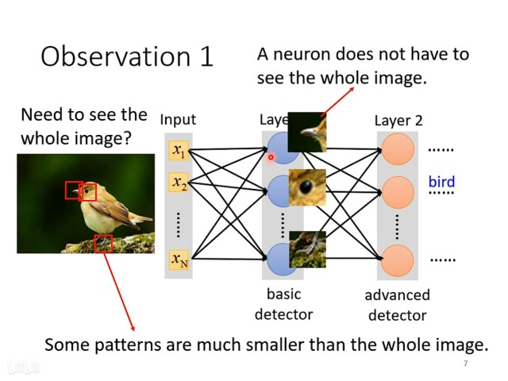
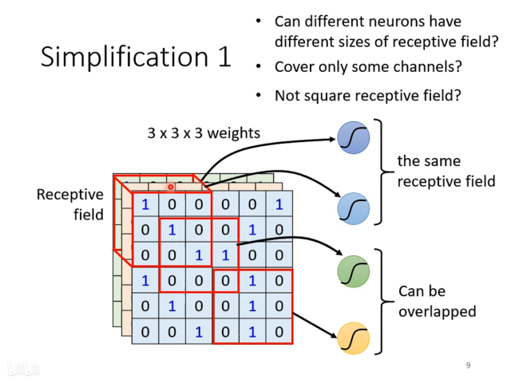
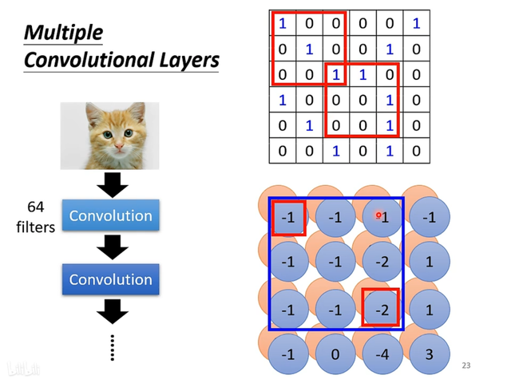
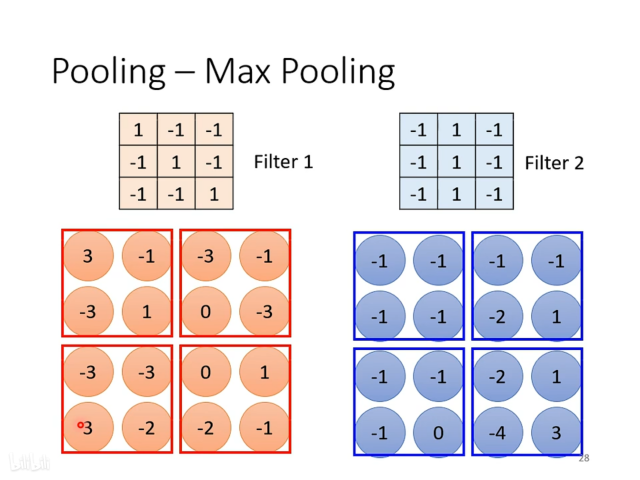

CNN 的想法
对于图片分类的任务，我们可以采用让特征识别（这与人类分类物体的方法是类似的）的方法，让每一个神经元只与部分区域（Receptive field）关联，而不需要每一层都full connect。
所以，CNN是为了影像的特性而生的，把CNN用于影像领域外的任务要仔细思考是否出现影像类似的特性。
卷积层（Convolutional layers）
卷积核
卷积核大小表示局部特征区域（即Receptive field）的大小
卷积核一般大小取3x3，同时包含RGB三个通道
Q：卷积核大小只有3x3，如果图片尺寸比较大，3x3会不会无法识别特征？
这个问题将在下面回答
步长 （Stride）
每次卷积核移动的长度，一般设为1或2，因为我们希望Receptive field之间是有重叠的，因为如果Receptive field之间完全没有重叠，那么如果pattern出现在两个Receptive field的交界上，特征就难以被识别。
填充 （Padding）
移动卷积核时，如果步长大于1，则移动时卷积核可能会超出图片范围，则需要在边上填充一些值，常见的方法有补0法、取平均法等。

参数共享（Parameter Sharing）
对于一个特征，可能出现在图片不同的位置，而对于一个区域，有一组神经元负责，每个神经元负责识别不同的特征，所以此时可以让负责不同区域，但功能相同的神经元享有相同的参数，从而减少参数数量。
对于每一个区域，有一组神经元负责，每个神经元有一组参数，这一组组参数叫做filter，所有区域共享一组filter
卷积层的运行过程
之前提到，图片中每一个小区域有一组神经元负责，每一个神经元的参数叫做filter，所有小区域共享一组filter，那么卷积层可以看作每一个filter对图像分别作用，得到一组图像，所有的filter对图像作用后，得到了新的图像，图像的channel数则为filter的数量。这样的一张图片叫做特征图像。


所以一张图像经过卷积层后，会得到一张特征图像。之前有提到，卷积核大小只有3x3时会不会无法识别较大特征，这是不会的，因为在下一个卷积层中对特征图像做卷积时，若卷积核为3x3，步长为1时，则相当于对5x5大小区域卷积。
卷积层的两种理解方式

池化层（Pooling layers）
对于一张较大的图片而言，采样时少采样一些点并不会影响图像是什么
池化层并没有参数，其操作时固定的，相当于一个算符
常用的池化方法有Max Pooling，过程如下图所示，一般而言，池化时分组大小为2x2

一般而言，池化常常在卷积层后使用，如一个或两个卷积层后跟一个池化层，用于缩小图片，从而减小运算量。但是这对于网络的效果而言可能是由损害的，因为如果特征特别细小，则池化可能会漏过特征。
Flatten layers
图像经过一系列卷积、池化后，得到小的特征图像，此时这个特征图像代表图片中较大的、全局的特征，此时就可以把图像展平，然后通过全连接层，经过softmax归一化后，得出分类的结果。
其实到这里，和回归问题里用到的神经网络是类似的，只不过回归问题的特征是显式的，所以一开始就可能是全连接层，而影像类任务中，一开始需要先提取特征，最后再让特征经过全连接层计算。

CNN 的缺点
CNN很难处理图片的缩放、旋转，所以我们需要数据增强（data augmentation）
作者: 核子